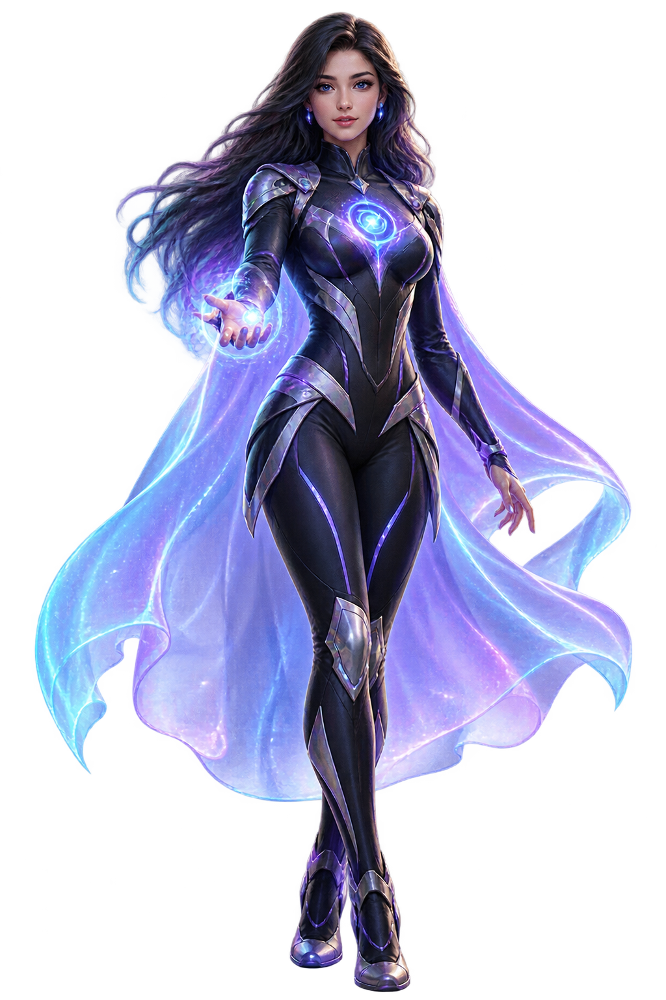
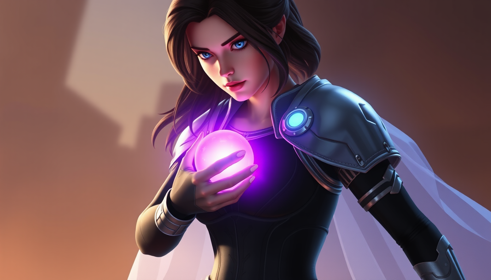
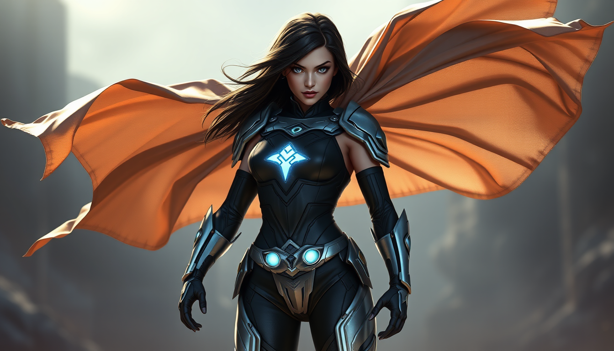
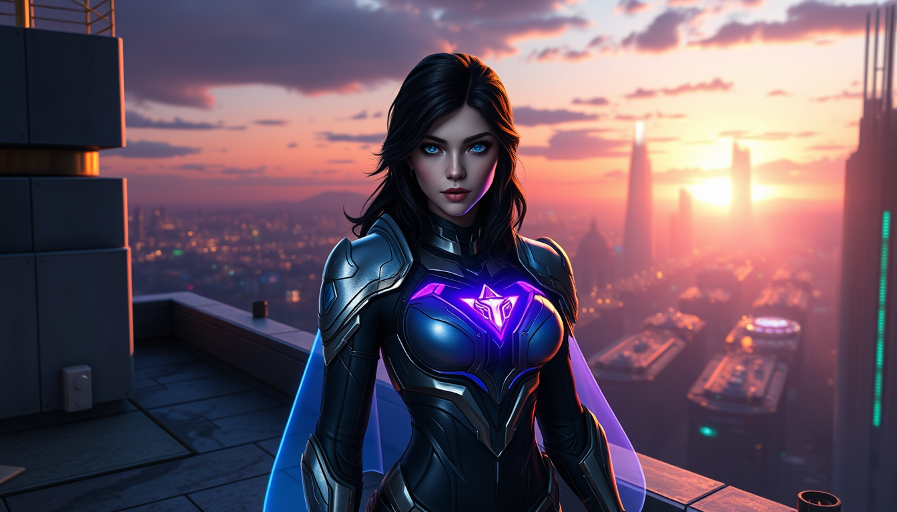
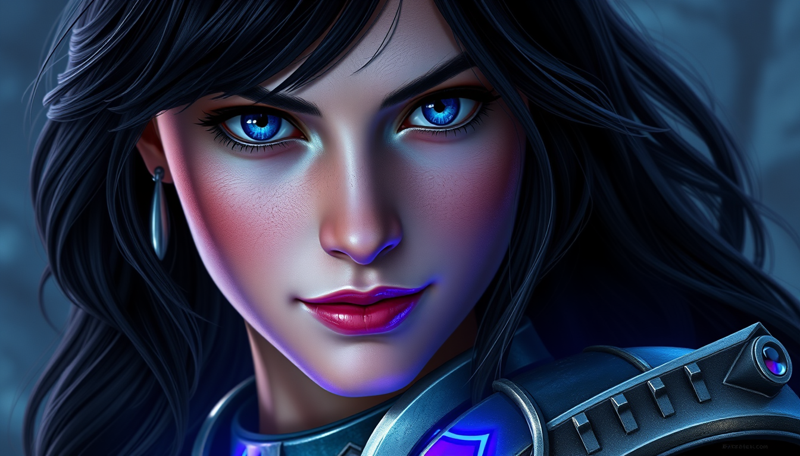
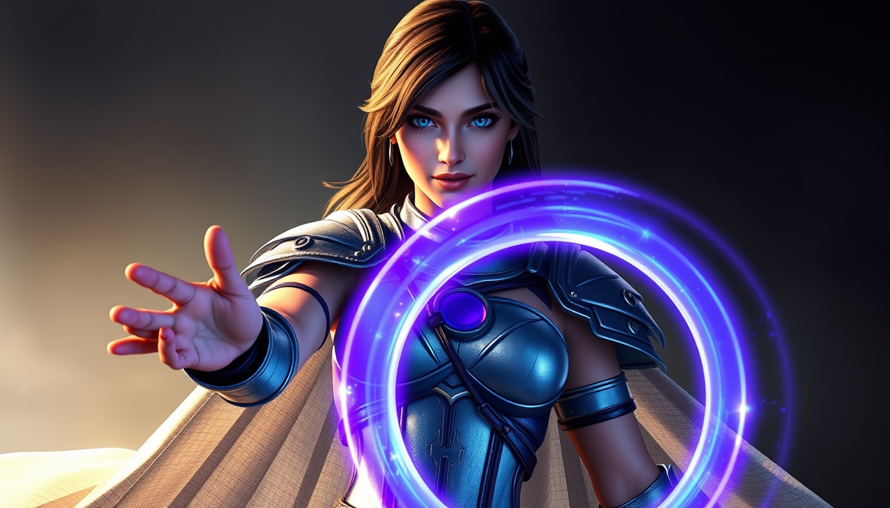
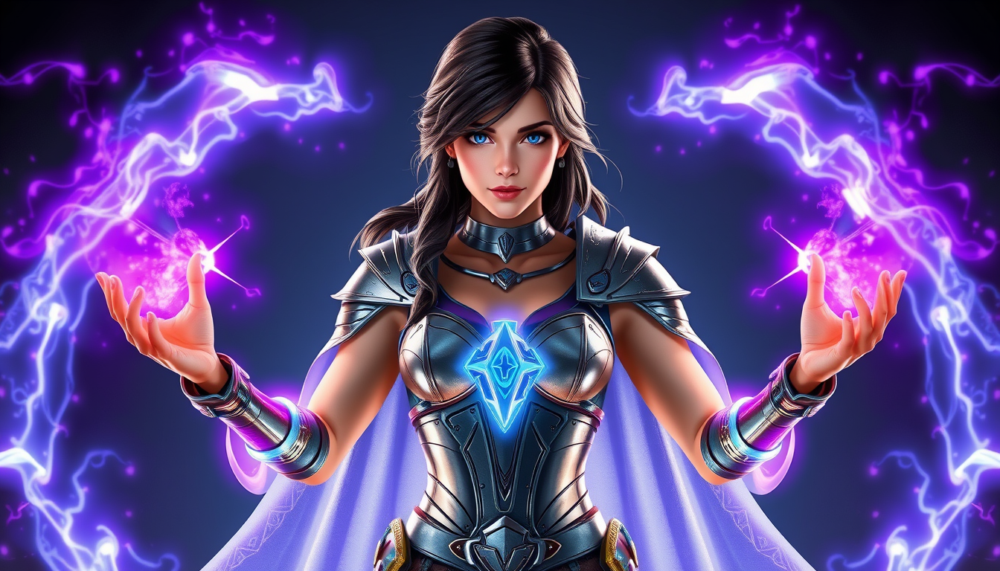

Listen
A judgment-free conversational space where users can express what they are experiencing.
GUARDIAN OF SECOND CHANCES
LARA is a digital companion designed to create a calm, judgment-free space where people can express themselves, reflect on their experiences and remember that their story does not end with one difficult chapter.

HER STORY
LARA represents the belief that one mistake, one failure, or one painful chapter should never define an entire life.

LARA is not a superhero who fights villains. Her purpose is more human: she helps people pause, reflect and find a reason to keep moving forward.
Instead of immediately trying to fix everything, LARA begins by listening. Sometimes being heard is the first step toward feeling less alone.
A second chance does not have to be dramatic. It can begin with one conversation, one decision, or simply choosing to try again.
LARA'S POWERS
LARA combines an immersive visual experience with simple interactive features designed around listening, reflection and encouragement.
A judgment-free conversational space where users can express what they are experiencing.
Encourages users to slow down, understand their feelings and look at difficult moments differently.
Reminds people that asking for support is a strength and that they do not have to face everything alone.
LARA's central message is simple: difficult chapters do not have to become the ending.
THE MISSION
LARA was created around one simple belief: people should not be permanently defined by their worst moment.
The goal is to create a digital environment where users can pause, express themselves and find a small sense of hope. Through conversation and reflection, LARA encourages people to recognize that change is possible.
Encourage self-expression
Promote positive reflection
Remind users that support matters
Celebrate the possibility of change

HOW IT WORKS
The experience is intentionally simple. Tell LARA a little about yourself, then share whatever is on your mind.
LARA asks for your name, age, place and email address.
Tell LARA what has been on your mind in your own words.
LARA responds with an encouraging, reflective message.
Finish the conversation with a reminder that another beginning is possible.
THE WORLD OF LARA




TALK TO LARA
LARA will ask you a few simple questions before giving you space to share what is on your mind.
Guardian of Second Chances
LARA is a project demonstration and is not a medical, psychological or emergency service. If you are in immediate danger, contact your local emergency service or a trusted person.